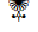
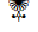

الله ممّا نفعنا بما علّمتنا
الله ممّا نفعنا بما علّمتنا
Par l’étoile à son déclin! (1) Votre compagnon ne s’est pas égaré et n’a pas été induit en
erreur1
...:
....
(2) et il ne prononce rien sous l’effet de la passion; (3) ce n’est rien d’autre qu’une révélation inspirée. (4) Que lui a enseigné [l’Ange Gabriel] à la force prodigieuse, (5) doué de sagacité; c’est alors qu’il se montra sous sa forme réelle [angélique], (6) alors qu’ils se trouvait à l’horizon supérieur. (7) Puis il se rapprocha et descendit encore plus bas, (8) et fut à deux portées d’arc, ou plus près encore. (9) Il révéla à Son serviteur ce qu’Il révéla. (10) Le cœur n’a pas menti en ce qu’il a vu. (11) Lui contestez-vous donc ce qu’il voit? (12) Il l’a pourtant vu, lors d’une autre descente, (13) près de la
Sidrat-ul-Muntahā2
...:
....
, (14) près d’elle se trouve le jardin de
Ma’w?3
...:
....
: (15) au moment où le lotus était couvert de ce qui le couvrait. (16) la vue n’a nullement dévié ni outrepassé la mesure. (17) Il a bien vu certaines des grandes merveilles de son Seigneur. (18) Que vous en semble [des divinités], Lāt et Uuzzā (19) ainsi que Manāt, cette troisième
autre?4
...:
....
(20) Sera-ce à vous le garçon et à Lui la fille? (21) Que voilà donc un partage injuste! (22) Ce ne sont que des noms que vous avez inventés, vous et vos ancêtres. Allah n’a fait descendre aucune preuve à leur sujet. Ils ne suivent que la conjecture et les passions de [leurs] âmes, alors que la guidée leur est venue de leur Seigneur. (23) Ou bien l’homme aura-t-il tout ce qu’il désire? (24) A Allah appartiennent la vie future et la vie d’ici-bas. (25) Et que d’Anges dans les cieux dont l’intercession ne sert à rien, sinon qu’après qu’Allah l’aura permis, en faveur de qui Il veut et qu’Il agrée. (26)
526
Ceux qui ne croient pas en l’au-delà donnent aux Anges des noms de femmes, (27) alors qu’ils n’en ont aucune science: ils ne suivent que la conjecture, alors que la conjecture ne sert à rien contre la vérité. (28) Ecarte-toi donc, de celui qui tourne le dos à Notre rappel et qui ne désire que la vie présente. (29) Voilà toute la portée de leur savoir. Certes ton Seigneur connaît parfaitement celui qui s’égare de Son chemin et Il connaît parfaitement qui est bien guidé. (30) A Allah appartient ce qui est dans les cieux et sur la terre afin qu’Il rétribue ceux qui font le mal selon ce qu’ils œuvrent, et récompense ceux qui font le bien par la meilleure [récompense], (31) ceux qui évitent les plus grands péchés ainsi que les turpitudes et [qui ne commettent] que des fautes légères. Certes, le pardon de Ton Seigneur est immense. C’est Lui qui vous connaît le mieux quand Il vous a produits de terre, et aussi quand vous étiez des embryons dans les ventres de vos mères. Ne vantez pas vous-mêmes votre pureté; c’est Lui qui connaît mieux ceux qui [Le] craignent. (32) Vois-tu celui qui s’est détourné, (33) donné peu et a [finalement] cessé de donner? (34) Détient-il la science de l’Inconnaissable en sorte qu’il voit? (35) Ne lui a-t-on pas annoncé ce qu’il y avait dans les feuilles de Moïse (36) et celles d’Abraham qui a tenu parfaitement [sa promesse de transmettre] (37) qu’aucune [âme] ne portera le fardeau (le péché) d’autrui, (38) et qu’en vérité, l’homme n’obtient que [le fruit] de ses efforts; (39) et que son effort, en vérité, lui sera présenté (le jour du Jugement). (40) Ensuite il en sera récompensé pleinement, (41) et que tout aboutit, en vérité, vers ton Seigneur, (42) et que c’est Lui qui a fait rire et qui a fait pleurer, (43) et que c’est Lui qui a fait mourir et qui a ramené à la vie (44)
527
et que c’est Lui qui a crée les deux éléments de couple, le mâle et la femelle, (45) d’une goutte de sperme quand elle est éjaculée (46) et que la seconde création Lui incombe, (47) et c’est Lui qui a enrichi et qui a fait acquérir. (48) Et c’est Lui qui est le Seigneur de
Sirius5
...:
....
, (49) et c’est Lui qui a fait périr les anciens ‘Aad, (50) ainsi que les Ṯamūd, et Il fit que rien n’en subsistât, (51) ainsi que le peuple de Noé antérieurement, car ils étaient encore plus injustes et plus violents, (52) de même qu’Il anéantit les villes
renversées6
...:
....
. (53) Et les recouvrit de ce dont Il les recouvrit. (54) Lequel donc des bienfaits de ton Seigneur mets-tu en doute? (55) Voici un avertisseur analogue aux avertisseurs anciens: (56) l’Imminente (L’heure du Jugement) s’approche. (57) Rien d’autre en dehors d’Allah ne peut la dévoiler. (58) Quoi! vous étonnez-vous de ce discours (le Coran)? (59) Et vous [en] riez et n’[en] pleurez point? (60) absorbés [que vous êtes] par votre distraction. (61) Prosternez-vous donc à Allah et
adorez-Le7
...:
....
. (62)
Au nom d’Allah, le Tout Miséricordieux, le Très Miséricordieux
L’Heure approche et la Lune s’est fendue. (1) Et s’ils voient un prodige, ils s’en détournent et disent: «Une magie persistante». (2) Et ils [le] traitent de mensonge et suivent leurs propres impulsions, or chaque chose arrivera à son terme [et son but]. (3) Ils ont pourtant reçu comme nouvelles de quoi les empêcher (du mal); (4) [Cela est] une sagesse parfaite. Mais les avertissements ne [leur] servent à rien. (5) Détourne-toi d’eux. Le jour où l’appeleur appellera vers une chose affreuse, (6)
528
وَٱلنَّجۡمِ إِذَا هَوَىٰ (١) مَا ضَلَّ صَاحِبُكُمۡ وَمَا غَوَىٰ (٢) وَمَا يَنطِقُ عَنِ ٱلۡهَوَىٰٓ (٣) إِنۡ هُوَ إِلَّا وَحۡىٌ۬ يُوحَىٰ (٤) عَلَّمَهُ ۥ شَدِيدُ ٱلۡقُوَىٰ (٥) ذُو مِرَّةٍ۬ فَٱسۡتَوَىٰ (٦) وَهُوَ بِٱلۡأُفُقِ ٱلۡأَعۡلَىٰ (٧) ثُمَّ دَنَا فَتَدَلَّىٰ (٨) فَكَانَ قَابَ قَوۡسَيۡنِ أَوۡ أَدۡنَىٰ (٩) فَأَوۡحَىٰٓ إِلَىٰ عَبۡدِهِۦ مَآ أَوۡحَىٰ (١٠) مَا كَذَبَ ٱلۡفُؤَادُ مَا رَأَىٰٓ (١١) أَفَتُمَـٰرُونَهُ ۥ عَلَىٰ مَا يَرَىٰ (١٢) وَلَقَدۡ رَءَاهُ نَزۡلَةً أُخۡرَىٰ (١٣) عِندَ سِدۡرَةِ ٱلۡمُنتَهَىٰ (١٤) عِندَهَا جَنَّةُ ٱلۡمَأۡوَىٰٓ (١٥) إِذۡ يَغۡشَى ٱلسِّدۡرَةَ مَا يَغۡشَىٰ (١٦) مَا زَاغَ ٱلۡبَصَرُ وَمَا طَغَىٰ (١٧) لَقَدۡ رَأَىٰ مِنۡ ءَايَـٰتِ رَبِّهِ ٱلۡكُبۡرَىٰٓ (١٨) أَفَرَءَيۡتُمُ ٱللَّـٰتَ وَٱلۡعُزَّىٰ (١٩) وَمَنَوٰةَ ٱلثَّالِثَةَ ٱلۡأُخۡرَىٰٓ (٢٠) أَلَكُمُ ٱلذَّكَرُ وَلَهُ ٱلۡأُنثَىٰ (٢١) تِلۡكَ إِذً۬ا قِسۡمَةٌ۬ ضِيزَىٰٓ (٢٢) إِنۡ هِىَ إِلَّآ أَسۡمَآءٌ۬ سَمَّيۡتُمُوهَآ أَنتُمۡ وَءَابَآؤُكُم مَّآ أَنزَلَ ٱللَّهُ بِہَا مِن سُلۡطَـٰنٍۚ إِن يَتَّبِعُونَ إِلَّا ٱلظَّنَّ وَمَا تَهۡوَى ٱلۡأَنفُسُۖ وَلَقَدۡ جَآءَهُم مِّن رَّبِّہِمُ ٱلۡهُدَىٰٓ (٢٣) أَمۡ لِلۡإِنسَـٰنِ مَا تَمَنَّىٰ (٢٤) فَلِلَّهِ ٱلۡأَخِرَةُ وَٱلۡأُولَىٰ (٢٥) ۞ وَكَم مِّن مَّلَكٍ۬ فِى ٱلسَّمَـٰوَٲتِ لَا تُغۡنِى شَفَـٰعَتُہُمۡ شَيۡـًٔا إِلَّا مِنۢ بَعۡدِ أَن يَأۡذَنَ ٱللَّهُ لِمَن يَشَآءُ وَيَرۡضَىٰٓ (٢٦)
٥٢٦
إِنَّ ٱلَّذِينَ لَا يُؤۡمِنُونَ بِٱلۡأَخِرَةِ لَيُسَمُّونَ ٱلۡمَلَـٰٓٮِٕكَةَ تَسۡمِيَةَ ٱلۡأُنثَىٰ (٢٧) وَمَا لَهُم بِهِۦ مِنۡ عِلۡمٍۖ إِن يَتَّبِعُونَ إِلَّا ٱلظَّنَّۖ وَإِنَّ ٱلظَّنَّ لَا يُغۡنِى مِنَ ٱلۡحَقِّ شَيۡـًٔ۬ا (٢٨) فَأَعۡرِضۡ عَن مَّن تَوَلَّىٰ عَن ذِكۡرِنَا وَلَمۡ يُرِدۡ إِلَّا ٱلۡحَيَوٰةَ ٱلدُّنۡيَا (٢٩) ذَٲلِكَ مَبۡلَغُهُم مِّنَ ٱلۡعِلۡمِۚ إِنَّ رَبَّكَ هُوَ أَعۡلَمُ بِمَن ضَلَّ عَن سَبِيلِهِۦ وَهُوَ أَعۡلَمُ بِمَنِ ٱهۡتَدَىٰ (٣٠) وَلِلَّهِ مَا فِى ٱلسَّمَـٰوَٲتِ وَمَا فِى ٱلۡأَرۡضِ لِيَجۡزِىَ ٱلَّذِينَ أَسَـٰٓـُٔواْ بِمَا عَمِلُواْ وَيَجۡزِىَ ٱلَّذِينَ أَحۡسَنُواْ بِٱلۡحُسۡنَى (٣١) ٱلَّذِينَ يَجۡتَنِبُونَ كَبَـٰٓٮِٕرَ ٱلۡإِثۡمِ وَٱلۡفَوَٲحِشَ إِلَّا ٱللَّمَمَۚ إِنَّ رَبَّكَ وَٲسِعُ ٱلۡمَغۡفِرَةِۚ هُوَ أَعۡلَمُ بِكُمۡ إِذۡ أَنشَأَكُم مِّنَ ٱلۡأَرۡضِ وَإِذۡ أَنتُمۡ أَجِنَّةٌ۬ فِى بُطُونِ أُمَّهَـٰتِكُمۡۖ فَلَا تُزَكُّوٓاْ أَنفُسَكُمۡۖ هُوَ أَعۡلَمُ بِمَنِ ٱتَّقَىٰٓ (٣٢) أَفَرَءَيۡتَ ٱلَّذِى تَوَلَّىٰ (٣٣) وَأَعۡطَىٰ قَلِيلاً۬ وَأَكۡدَىٰٓ (٣٤) أَعِندَهُ ۥ عِلۡمُ ٱلۡغَيۡبِ فَهُوَ يَرَىٰٓ (٣٥) أَمۡ لَمۡ يُنَبَّأۡ بِمَا فِى صُحُفِ مُوسَىٰ (٣٦) وَإِبۡرَٲهِيمَ ٱلَّذِى وَفَّىٰٓ (٣٧) أَلَّا تَزِرُ وَازِرَةٌ۬ وِزۡرَ أُخۡرَىٰ (٣٨)وَأَن لَّيۡسَ لِلۡإِنسَـٰنِ إِلَّا مَا سَعَىٰ (٣٩)وَأَنَّ سَعۡيَهُ ۥ سَوۡفَ يُرَىٰ (٤٠)ثُمَّ يُجۡزَٮٰهُ ٱلۡجَزَآءَ ٱلۡأَوۡفَىٰ (٤١) وَأَنَّ إِلَىٰ رَبِّكَ ٱلۡمُنتَہَىٰ (٤٢) وَأَنَّهُ ۥ هُوَ أَضۡحَكَ وَأَبۡكَىٰ (٤٣) وَأَنَّهُ ۥ هُوَ أَمَاتَ وَأَحۡيَا (٤٤)
٥٢٧
 سجدة

سجدة

وَأَنَّهُ ۥ خَلَقَ ٱلزَّوۡجَيۡنِ ٱلذَّكَرَ وَٱلۡأُنثَىٰ (٤٥) مِن نُّطۡفَةٍ إِذَا تُمۡنَىٰ (٤٦) وَأَنَّ عَلَيۡهِ ٱلنَّشۡأَةَ ٱلۡأُخۡرَىٰ (٤٧) وَأَنَّهُ ۥ هُوَ أَغۡنَىٰ وَأَقۡنَىٰ (٤٨) وَأَنَّهُ ۥ هُوَ رَبُّ ٱلشِّعۡرَىٰ (٤٩) وَأَنَّهُ ۥۤ أَهۡلَكَ عَادًا ٱلۡأُولَىٰ (٥٠) وَثَمُودَاْ فَمَآ أَبۡقَىٰ (٥١) وَقَوۡمَ نُوحٍ۬ مِّن قَبۡلُۖ إِنَّہُمۡ كَانُواْ هُمۡ أَظۡلَمَ وَأَطۡغَىٰ (٥٢) وَٱلۡمُؤۡتَفِكَةَ أَهۡوَىٰ (٥٣) فَغَشَّٮٰهَا مَا غَشَّىٰ (٥٤) فَبِأَىِّ ءَالَآءِ رَبِّكَ تَتَمَارَىٰ (٥٥) هَـٰذَا نَذِيرٌ۬ مِّنَ ٱلنُّذُرِ ٱلۡأُولَىٰٓ (٥٦) أَزِفَتِ ٱلۡأَزِفَةُ (٥٧) لَيۡسَ لَهَا مِن دُونِ ٱللَّهِ كَاشِفَةٌ (٥٨) أَفَمِنۡ هَـٰذَا ٱلۡحَدِيثِ تَعۡجَبُونَ (٥٩) وَتَضۡحَكُونَ وَلَا تَبۡكُونَ (٦٠) وَأَنتُمۡ سَـٰمِدُونَ (٦١) فَٱسۡجُدُواْ لِلَّهِ وَٱعۡبُدُواْ ۩ (٦٢) ‹ ›
بِسۡمِ ٱللهِ ٱلرَّحۡمَـٰنِ ٱلرَّحِيمِ
ٱقۡتَرَبَتِ ٱلسَّاعَةُ وَٱنشَقَّ ٱلۡقَمَرُ (١) وَإِن يَرَوۡاْ ءَايَةً۬ يُعۡرِضُواْ وَيَقُولُواْ سِحۡرٌ۬ مُّسۡتَمِرٌّ۬ (٢) وَڪَذَّبُواْ وَٱتَّبَعُوٓاْ أَهۡوَآءَهُمۡۚ وَڪُلُّ أَمۡرٍ۬ مُّسۡتَقِرٌّ۬ (٣) وَلَقَدۡ جَآءَهُم مِّنَ ٱلۡأَنۢبَآءِ مَا فِيهِ مُزۡدَجَرٌ (٤) حِڪۡمَةُۢ بَـٰلِغَةٌ۬ۖ فَمَا تُغۡنِ ٱلنُّذُرُ (٥) فَتَوَلَّ عَنۡهُمۡۘ يَوۡمَ يَدۡعُ ٱلدَّاعِ إِلَىٰ شَىۡءٍ۬ نُّڪُرٍ (٦)
٥٢٨
« Next Previous »| C. Naçr Al-Qatamy |

|
C. Moufti Sãbik |